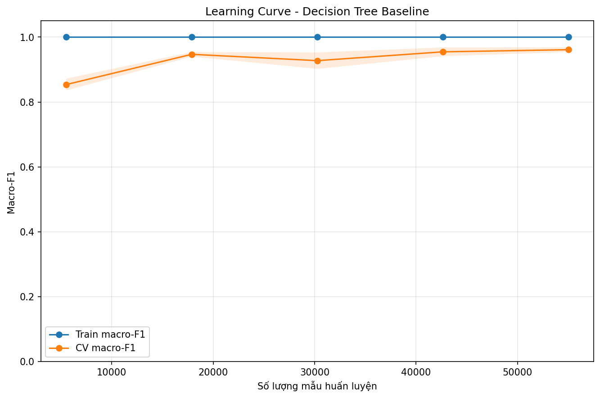
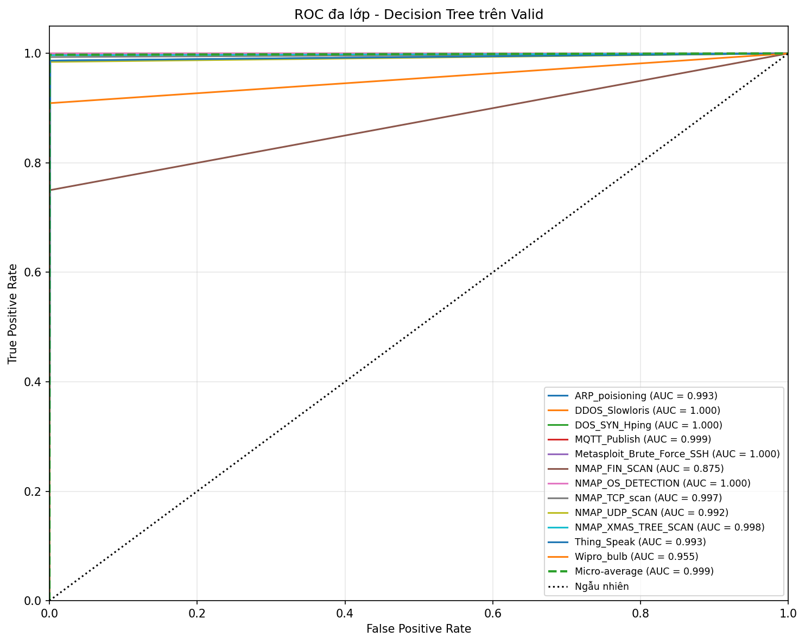
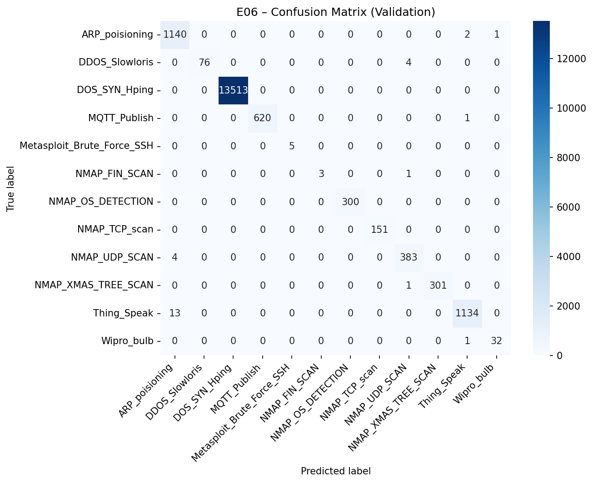
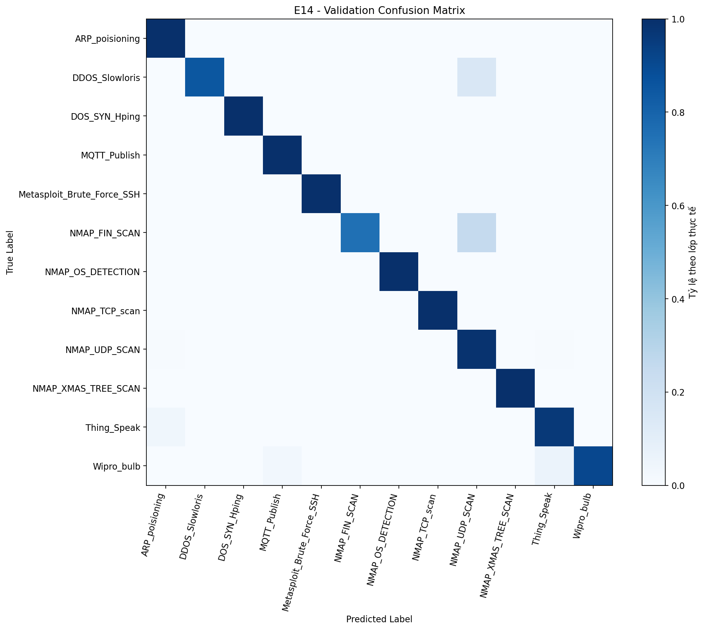

Nhật ký chạy E07, E06, E14
Tài liệu này trích các bước chạy chính từ nhật ký từng mô hình. Mỗi bước hiển thị code, kết quả chạy và nhận xét ngay bên dưới kết quả.
Excel tổng hợp metric: Exp4_Comparison.xlsx
Các mô hình trong nhật ký
- Decision Tree - cân bằng lớp — CV macro-F1 trung bình 0,9613 (độ lệch chuẩn 0,0088); Validation macro-F1 0,9794 và accuracy 0,9976.
- Random Forest - balanced_subsample — CV macro-F1 trung bình 0,9661 (độ lệch chuẩn 0,0063); Validation macro-F1 0,9808 và accuracy 0,9984.
- MLP Signed-Log - alpha=0.01 — CV macro-F1 trung bình 0,9499 (độ lệch chuẩn 0,0147); Validation macro-F1 0,9613 và accuracy 0,9960.
Decision Tree - cân bằng lớp
CV macro-F1 trung bình 0,9613 (độ lệch chuẩn 0,0088); Validation macro-F1 0,9794 và accuracy 0,9976.
Cấu hình mô hình
Code
EXPERIMENT = {
'id': 'E07',
'family': 'DT',
'variant': 'balanced_classes',
'hypothesis': 'Use balanced class weights to emphasize minority classes.',
'params': {},
}
TRAIN_PATH = Path(r"C:\homework\Machine Learning\SGU26K2_MayHoc_DCT124C3_Nhom4_RT-IoT2022\final_IoT\sample_project\data\splitted data\train.csv")
VALID_PATH = Path(r"C:\homework\Machine Learning\SGU26K2_MayHoc_DCT124C3_Nhom4_RT-IoT2022\final_IoT\sample_project\data\splitted data\validation.csv")
TARGET_COLUMN = 'Attack_type'
DROP_COLUMNS = ['group_id', 'Unnamed: 0']
RANDOM_STATE = 42
N_SPLITS = 3
REPORTS_ROOT = Path('reports')
RUN_ID = datetime.now(timezone.utc).strftime('%Y%m%dT%H%M%S%fZ')
RUN_DIR = Path(r"C:\homework\Machine Learning\SGU26K2_MayHoc_DCT124C3_Nhom4_RT-IoT2022\final_IoT\sample_project\result\exps\exp4\E07_DT")
METRIC_NAMES = [
'accuracy', 'macro_f1', 'weighted_f1', 'macro_precision', 'macro_recall'
]
print('Thư mục làm việc:', Path.cwd())
print('Train:', TRAIN_PATH.resolve())
print('Valid:', VALID_PATH.resolve())
print('Kết quả sẽ lưu tại:', RUN_DIR.resolve())Pipeline và tham số mô hình
Code
transformers = []
if NUMERIC_COLUMNS:
numeric_pipeline = Pipeline([
('imputer', SimpleImputer(strategy='median', keep_empty_features=True)),
])
transformers.append(('numeric', numeric_pipeline, NUMERIC_COLUMNS))
if CATEGORICAL_COLUMNS:
categorical_pipeline = Pipeline([
('imputer', SimpleImputer(
strategy='constant', fill_value='__MISSING__', keep_empty_features=True
)),
('onehot', OneHotEncoder(handle_unknown='ignore', sparse_output=True)),
])
transformers.append(('categorical', categorical_pipeline, CATEGORICAL_COLUMNS))
preprocessor = ColumnTransformer(transformers=transformers, remainder='drop')
# Seed cố định là thiết lập tái lập, EXPERIMENT['params'] vẫn giữ nguyên {}.
model_params = {'random_state': RANDOM_STATE, **EXPERIMENT['params']}
# Baseline: use the default unweighted classes.
base_pipeline = Pipeline([
('preprocess', preprocessor),
('model', DecisionTreeClassifier(**model_params,class_weight="balanced")),
])
def compute_metrics(y_true, y_pred):
return {
'accuracy': float(accuracy_score(y_true, y_pred)),
'macro_f1': float(f1_score(
y_true, y_pred, labels=LABELS, average='macro', zero_division=0
)),
'weighted_f1': float(f1_score(
y_true, y_pred, labels=LABELS, average='weighted', zero_division=0
)),
'macro_precision': float(precision_score(
y_true, y_pred, labels=LABELS, average='macro', zero_division=0
)),
'macro_recall': float(recall_score(
y_true, y_pred, labels=LABELS, average='macro', zero_division=0
)),
}
print('Tham số thực tế của cây:')
print(json.dumps(base_pipeline.named_steps['model'].get_params(), indent=2))Kết quả 3-fold CV
Code
# RUN_DIR.mkdir(parents=True, exist_ok=False)
cv = StratifiedKFold(n_splits=N_SPLITS, shuffle=True, random_state=RANDOM_STATE)
fold_records = []
oof_predictions = np.empty(len(y_train), dtype=object)
fold_assignment = np.zeros(len(y_train), dtype=int)
oof_coverage = np.zeros(len(y_train), dtype=int)
for fold, (fit_index, cv_index) in enumerate(cv.split(X_train, y_train), start=1):
X_fit, X_cv = X_train.iloc[fit_index], X_train.iloc[cv_index]
y_fit, y_cv = y_train.iloc[fit_index], y_train.iloc[cv_index]
fold_pipeline = clone(base_pipeline)
started = time.perf_counter()
fold_pipeline.fit(X_fit, y_fit)
fit_seconds = time.perf_counter() - started
started = time.perf_counter()
cv_prediction = fold_pipeline.predict(X_cv)
predict_seconds = time.perf_counter() - started
train_prediction = fold_pipeline.predict(X_fit)
cv_scores = compute_metrics(y_cv, cv_prediction)
train_scores = compute_metrics(y_fit, train_prediction)
fitted_tree = fold_pipeline.named_steps['model']
record = {
'experiment_id': EXPERIMENT['id'],
'fold': fold,
'n_fit': len(fit_index),
'n_cv': len(cv_index),
**cv_scores,
**{f'train_{name}': value for name, value in train_scores.items()},
'tree_depth': fitted_tree.get_depth(),
'n_leaves': fitted_tree.get_n_leaves(),
'fit_seconds': fit_seconds,
'predict_seconds': predict_seconds,
}
fold_records.append(record)
oof_predictions[cv_index] = cv_prediction
fold_assignment[cv_index] = fold
oof_coverage[cv_index] += 1
RUN_DIR.mkdir(parents=True, exist_ok=True)
pd.DataFrame(fold_records).to_csv(
RUN_DIR / 'cv_fold_results.csv',
index=False,
encoding='utf-8-sig',
)
print(f'Fold {fold}/{N_SPLITS} | học: {len(fit_index):,} | CV: {len(cv_index):,}')
display(pd.DataFrame([cv_scores, train_scores], index=['cv_validation', 'train_fit']).round(6))
if not np.all(oof_coverage == 1):
raise RuntimeError('Mỗi mẫu Train phải được dự đoán CV đúng một lần.')
cv_results = pd.DataFrame(fold_records)
pd.DataFrame({
'row_position': np.arange(len(y_train)),
'fold': fold_assignment,
'y_true': y_train.to_numpy(),
'y_pred': oof_predictions,
}).to_csv(RUN_DIR / 'cv_oof_predictions.csv', index=False, encoding='utf-8-sig')
print('Bảng điểm CV của cả 3 lượt:')
display(cv_results[['fold', 'n_fit', 'n_cv'] + METRIC_NAMES].round(6))Fold 1
Kết quả chạy
| Metric | Train | Fold validation |
|---|---|---|
| Accuracy | 1 | 0.997092 |
| Macro F1 | 1 | 0.961066 |
| Weighted F1 | 1 | 0.997095 |
| Macro Precision | 1 | 0.978350 |
| Macro Recall | 1 | 0.950183 |
Fold 2
Kết quả chạy
| Metric | Train | Fold validation |
|---|---|---|
| Accuracy | 1 | 0.997565 |
| Macro F1 | 1 | 0.952595 |
| Weighted F1 | 1 | 0.997559 |
| Macro Precision | 1 | 0.966807 |
| Macro Recall | 1 | 0.946219 |
Fold 3
Kết quả chạy
| Metric | Train | Fold validation |
|---|---|---|
| Accuracy | 1 | 0.997456 |
| Macro F1 | 1 | 0.970166 |
| Weighted F1 | 1 | 0.997461 |
| Macro Precision | 1 | 0.960510 |
| Macro Recall | 1 | 0.984416 |
Tổng hợp CV
Kết quả chạy
| Metric | CV mean | CV std |
|---|---|---|
| accuracy | 0.997371 | 0.000247 |
| macro_f1 | 0.961275 | 0.008787 |
| weighted_f1 | 0.997371 | 0.000245 |
| macro_precision | 0.968556 | 0.009048 |
| macro_recall | 0.960272 | 0.021003 |
Nhận xét: Macro-F1 CV trung bình 0,9613 (độ lệch chuẩn 0,0088); Validation đạt accuracy 0,9976 và macro-F1 0,9794. Chênh lệch Macro-F1 Train-CV là 0,0387, cho thấy mô hình khớp tập Train tốt hơn các fold.
Đánh giá trên tập Validation
Code
if not VALID_PATH.is_file():
raise FileNotFoundError(f'Không tìm thấy Valid: {VALID_PATH.resolve()}')
valid_df = pd.read_csv(VALID_PATH)
X_valid, y_valid, _, _ = extract_xy(
valid_df, feature_order=FEATURE_COLUMNS, numeric_columns=NUMERIC_COLUMNS
)
unknown_labels = sorted(set(y_valid.unique()) - set(LABELS))
if unknown_labels:
raise ValueError(f'Valid có nhãn chưa xuất hiện trong Train: {unknown_labels}')
absent_labels = sorted(set(LABELS) - set(y_valid.unique()))
if absent_labels:
print('Nhãn Train không có mẫu trong Valid:', absent_labels)
print('Các điểm macro vẫn được tính trên toàn bộ danh sách LABELS của Train.')
started = time.perf_counter()
valid_prediction = final_pipeline.predict(X_valid)
final_predict_seconds = time.perf_counter() - started
valid_scores = compute_metrics(y_valid, valid_prediction)
final_valid_results = pd.DataFrame([{
'experiment_id': EXPERIMENT['id'],
'family': EXPERIMENT['family'],
'variant': EXPERIMENT['variant'],
'n_train': len(X_train),
'n_valid': len(X_valid),
**valid_scores,
**{f'full_train_{name}': value for name, value in full_train_scores.items()},
'tree_depth': final_tree.get_depth(),
'n_leaves': final_tree.get_n_leaves(),
'fit_seconds': final_fit_seconds,
'predict_seconds': final_predict_seconds,
}])
final_valid_results.to_csv(
RUN_DIR / 'final_valid_results.csv', index=False, encoding='utf-8-sig'
)
pd.DataFrame({
'row_position': np.arange(len(y_valid)),
'y_true': y_valid.to_numpy(),
'y_pred': valid_prediction,
}).to_csv(RUN_DIR / 'valid_predictions.csv', index=False, encoding='utf-8-sig')
print(f'Valid: {len(X_valid):,} mẫu — kết quả của mô hình học trên toàn bộ Train:')
display(pd.DataFrame([valid_scores], index=['final_valid']).round(6))
del valid_dfKết quả chạy
| Metric | Train | Validation | Train - Validation |
|---|---|---|---|
| Accuracy | 1 | 0.997569 | 0.002431 |
| Macro F1 | 1 | 0.979412 | 0.020588 |
| Weighted F1 | 1 | 0.997562 | 0.002438 |
| Macro Precision | 1 | 0.995020 | 0.004980 |
| Macro Recall | 1 | 0.967153 | 0.032847 |
Ba lớp có F1 Validation thấp nhất
| class | precision | recall | F1 | support |
|---|---|---|---|---|
| NMAP_FIN_SCAN | 1.000000 | 0.750000 | 0.857143 | 4 |
| Wipro_bulb | 1.000000 | 0.909091 | 0.952381 | 33 |
| ARP_poisioning | 0.982578 | 0.986877 | 0.984723 | 1143 |
Nhận xét: Macro-F1 CV trung bình 0,9613 (độ lệch chuẩn 0,0088); Validation đạt accuracy 0,9976 và macro-F1 0,9794. Chênh lệch Macro-F1 Train-CV là 0,0387, cho thấy mô hình khớp tập Train tốt hơn các fold. Lớp có F1 Validation thấp nhất là NMAP_FIN_SCAN (F1=0,857, support=4). Do số mẫu của lớp này ít, chỉ số riêng lẻ cần được đọc thận trọng.
Biểu đồ đánh giá
learning_curve_macro_f1

valid_roc_curve

Random Forest - balanced_subsample
CV macro-F1 trung bình 0,9661 (độ lệch chuẩn 0,0063); Validation macro-F1 0,9808 và accuracy 0,9984.
Cấu hình mô hình
Code
train_df = pd.read_csv(TRAIN_PATH)
valid_df = pd.read_csv(VALID_PATH)
print("Train shape:", train_df.shape)
print("Validation shape:", valid_df.shape)
print("\\nCác cột train:")
print(train_df.columns.tolist())
if TARGET not in train_df.columns or TARGET not in valid_df.columns:
raise ValueError(f"Không tìm thấy cột nhãn '{TARGET}' trong cả hai tập dữ liệu.")
# Chỉ tách X/y, không loại bỏ hay biến đổi đặc trưng.
X_train = train_df.drop(columns=[TARGET]).copy()
y_train = train_df[TARGET].copy()
X_valid = valid_df.drop(columns=[TARGET]).copy()
y_valid = valid_df[TARGET].copy()
missing_cols = [c for c in X_train.columns if c not in X_valid.columns]
extra_cols = [c for c in X_valid.columns if c not in X_train.columns]
if missing_cols or extra_cols:
raise ValueError(
f"Cột không khớp giữa train và validation. "
f"Thiếu ở validation: {missing_cols}; dư ở validation: {extra_cols}"
)
X_valid = X_valid[X_train.columns]
# Không tự động điền giá trị thiếu vì yêu cầu không xử lý dữ liệu.
if X_train.isna().any().any() or X_valid.isna().any().any():
raise ValueError("Dữ liệu có giá trị thiếu. Notebook không tự impute; cần xử lý nguồn dữ liệu trước.")
print("\\nSố lớp train:", y_train.nunique())
print("Phân bố lớp train:")
display(y_train.value_counts())Pipeline và cấu hình Random Forest
Code
numeric_cols = X_train.select_dtypes(include=["number", "bool"]).columns.tolist()
categorical_cols = [c for c in X_train.columns if c not in numeric_cols]
# Cột số giữ nguyên (passthrough); chỉ mã hóa cột phân loại.
preprocessor = ColumnTransformer(
transformers=[
("categorical", OneHotEncoder(handle_unknown="ignore"), categorical_cols),
],
remainder="passthrough"
)
rf_e06 = RandomForestClassifier(
n_estimators=100,
random_state=RANDOM_STATE,
class_weight="balanced_subsample",
n_jobs=-1
)
e06_model = Pipeline(steps=[
("preprocessor", preprocessor),
("classifier", rf_e06)
])
print("Số cột số:", len(numeric_cols))
print("Số cột phân loại:", len(categorical_cols))
print("Các cột phân loại:", categorical_cols)
print(e06_model)Kết quả 3-fold CV
Code
cv = StratifiedKFold(n_splits=3, shuffle=True, random_state=RANDOM_STATE)
scoring = {
"accuracy": "accuracy",
"macro_f1": make_scorer(f1_score, average="macro", zero_division=0),
"weighted_f1": make_scorer(f1_score, average="weighted", zero_division=0),
"macro_precision": make_scorer(precision_score, average="macro", zero_division=0),
"macro_recall": make_scorer(recall_score, average="macro", zero_division=0),
}
cv_results = cross_validate(
e06_model,
X_train,
y_train,
cv=cv,
scoring=scoring,
return_train_score=False,
n_jobs=1,
error_score="raise"
)
cv_summary = pd.DataFrame({
"metric": list(scoring.keys()),
"mean": [cv_results[f"test_{m}"].mean() for m in scoring],
"std": [cv_results[f"test_{m}"].std(ddof=1) for m in scoring],
"fold_1": [cv_results[f"test_{m}"][0] for m in scoring],
"fold_2": [cv_results[f"test_{m}"][1] for m in scoring],
"fold_3": [cv_results[f"test_{m}"][2] for m in scoring],
})
display(cv_summary.style.format({c: "{:.4f}" for c in cv_summary.columns if c != "metric"}))Fold 1
Kết quả chạy
| Metric | Train | Fold validation |
|---|---|---|
| Accuracy | None | 0.998074 |
| Macro F1 | None | 0.969339 |
| Weighted F1 | None | 0.998064 |
| Macro Precision | None | 0.992166 |
| Macro Recall | None | 0.952683 |
Fold 2
Kết quả chạy
| Metric | Train | Fold validation |
|---|---|---|
| Accuracy | None | 0.997492 |
| Macro F1 | None | 0.958857 |
| Weighted F1 | None | 0.997481 |
| Macro Precision | None | 0.979600 |
| Macro Recall | None | 0.945359 |
Fold 3
Kết quả chạy
| Metric | Train | Fold validation |
|---|---|---|
| Accuracy | None | 0.997565 |
| Macro F1 | None | 0.970243 |
| Weighted F1 | None | 0.997560 |
| Macro Precision | None | 0.963441 |
| Macro Recall | None | 0.979997 |
Tổng hợp CV
Kết quả chạy
| Metric | CV mean | CV std |
|---|---|---|
| accuracy | 0.997710 | 0.000317 |
| macro_f1 | 0.966146 | 0.006329 |
| weighted_f1 | 0.997702 | 0.000317 |
| macro_precision | 0.978402 | 0.014400 |
| macro_recall | 0.959346 | 0.018255 |
Nhận xét: Macro-F1 CV trung bình 0,9661 (độ lệch chuẩn 0,0063); Validation đạt accuracy 0,9984 và macro-F1 0,9808. Macro-F1 Validation cao hơn CV trung bình 0,0147; kết quả đánh giá độc lập vẫn tích cực.
Đánh giá trên tập Validation
Code
train_df = pd.read_csv(TRAIN_PATH)
valid_df = pd.read_csv(VALID_PATH)
print("Train shape:", train_df.shape)
print("Validation shape:", valid_df.shape)
print("\\nCác cột train:")
print(train_df.columns.tolist())
if TARGET not in train_df.columns or TARGET not in valid_df.columns:
raise ValueError(f"Không tìm thấy cột nhãn '{TARGET}' trong cả hai tập dữ liệu.")
# Chỉ tách X/y, không loại bỏ hay biến đổi đặc trưng.
X_train = train_df.drop(columns=[TARGET]).copy()
y_train = train_df[TARGET].copy()
X_valid = valid_df.drop(columns=[TARGET]).copy()
y_valid = valid_df[TARGET].copy()
missing_cols = [c for c in X_train.columns if c not in X_valid.columns]
extra_cols = [c for c in X_valid.columns if c not in X_train.columns]
if missing_cols or extra_cols:
raise ValueError(
f"Cột không khớp giữa train và validation. "
f"Thiếu ở validation: {missing_cols}; dư ở validation: {extra_cols}"
)
X_valid = X_valid[X_train.columns]
# Không tự động điền giá trị thiếu vì yêu cầu không xử lý dữ liệu.
if X_train.isna().any().any() or X_valid.isna().any().any():
raise ValueError("Dữ liệu có giá trị thiếu. Notebook không tự impute; cần xử lý nguồn dữ liệu trước.")
print("\\nSố lớp train:", y_train.nunique())
print("Phân bố lớp train:")
display(y_train.value_counts())Kết quả chạy
| Metric | Train | Validation | Train - Validation |
|---|---|---|---|
| Accuracy | — | 0.998417 | — |
| Macro F1 | — | 0.980809 | — |
| Weighted F1 | — | 0.998412 | — |
| Macro Precision | — | 0.994672 | — |
| Macro Recall | — | 0.970040 | — |
Ba lớp có F1 Validation thấp nhất
| class | precision | recall | F1 | support |
|---|---|---|---|---|
| NMAP_FIN_SCAN | 1.000000 | 0.750000 | 0.857143 | 4 |
| Wipro_bulb | 0.969697 | 0.969697 | 0.969697 | 33 |
| DDOS_Slowloris | 1.000000 | 0.950000 | 0.974359 | 80 |
Nhận xét: Macro-F1 CV trung bình 0,9661 (độ lệch chuẩn 0,0063); Validation đạt accuracy 0,9984 và macro-F1 0,9808. Macro-F1 Validation cao hơn CV trung bình 0,0147; kết quả đánh giá độc lập vẫn tích cực. Lớp có F1 Validation thấp nhất là NMAP_FIN_SCAN (F1=0,857, support=4). Do số mẫu của lớp này ít, chỉ số riêng lẻ cần được đọc thận trọng.
Biểu đồ đánh giá
E06_validation_confusion_matrix

Lưu kết quả thí nghiệm
Code — Lưu metric và bằng chứng
from sklearn.metrics import precision_recall_fscore_support
fold_metrics = pd.DataFrame({
"fold": np.arange(1, len(cv_results["test_accuracy"]) + 1),
**{metric: cv_results[f"test_{metric}"] for metric in scoring},
})
fold_metrics.to_csv(RESULT_DIR / "E06_cv_folds.csv", index=False, encoding="utf-8-sig")
cv_summary.to_csv(RESULT_DIR / "E06_cv_summary.csv", index=False, encoding="utf-8-sig")
validation_summary.to_csv(RESULT_DIR / "E06_validation_metrics.csv", index=False, encoding="utf-8-sig")
precision, recall, f1, support = precision_recall_fscore_support(
y_valid, y_pred, labels=labels, zero_division=0
)
per_class = pd.DataFrame({
"class": labels,
"precision": precision,
"recall": recall,
"f1_score": f1,
"support": support,
})
per_class.to_csv(RESULT_DIR / "E06_validation_per_class.csv", index=False, encoding="utf-8-sig")
pd.DataFrame(cm, index=pd.Index(labels, name="Actual"), columns=labels).to_csv(
RESULT_DIR / "E06_validation_confusion_matrix.csv", encoding="utf-8-sig"
)
pd.DataFrame({"y_true": y_valid.to_numpy(), "y_pred": y_pred}).to_csv(
RESULT_DIR / "E06_validation_predictions.csv", index=False, encoding="utf-8-sig"
)
print("Saved E06 fold, validation, class, confusion-matrix tables and plot to:", RESULT_DIR)MLP Signed-Log - alpha=0.01
CV macro-F1 trung bình 0,9499 (độ lệch chuẩn 0,0147); Validation macro-F1 0,9613 và accuracy 0,9960.
Tiền xử lý dữ liệu
Đọc dữ liệu nguồn
Code
for data_path in (TRAIN_SOURCE, VALIDATION_SOURCE):
if not data_path.is_file():
raise FileNotFoundError(data_path)
train_df = pd.read_csv(TRAIN_SOURCE)
validation_df = pd.read_csv(VALIDATION_SOURCE)
if TARGET not in train_df.columns or TARGET not in validation_df.columns:
raise ValueError(f"Train và Validation phải có cột nhãn {TARGET!r}")
if not train_df.columns.equals(validation_df.columns):
raise ValueError("Tên hoặc thứ tự cột Train/Validation không khớp")
if train_df.empty or validation_df.empty:
raise ValueError("Train và Validation không được để trống")
if train_df[TARGET].isna().any() or validation_df[TARGET].isna().any():
raise ValueError("Nhãn có giá trị thiếu")
print("Train:", train_df.shape)
print("Validation:", validation_df.shape)
display(train_df.head(3))Áp dụng Signed-Log
Code
def signed_log(values):
values = np.asarray(values, dtype=np.float64)
return np.sign(values) * np.log1p(np.abs(values))
train_processed = train_df.copy()
validation_processed = validation_df.copy()
train_before = train_df[numeric_features].head(5).copy()
validation_before = validation_df[numeric_features].head(5).copy()
train_processed.loc[:, numeric_features] = signed_log(
train_processed[numeric_features].to_numpy(dtype=np.float64)
)
validation_processed.loc[:, numeric_features] = signed_log(
validation_processed[numeric_features].to_numpy(dtype=np.float64)
)
preview = pd.DataFrame(
{
"Trước Signed-log": train_before.iloc[:, 0],
"Sau Signed-log": train_processed[numeric_features].head(5).iloc[:, 0],
}
)
print("Đặc trưng số được xử lý:", len(numeric_features))
print("Cột phân loại được giữ nguyên:", CATEGORICAL_FEATURES)
display(preview)Kiểm tra schema sau xử lý
Code
if not train_processed.columns.equals(train_df.columns):
raise ValueError("Tiền xử lý đã làm thay đổi cấu trúc cột Train")
if not validation_processed.columns.equals(validation_df.columns):
raise ValueError("Tiền xử lý đã làm thay đổi cấu trúc cột Validation")
if not train_processed[TARGET].equals(train_df[TARGET]):
raise ValueError("Không được biến đổi cột nhãn Train")
if not validation_processed[TARGET].equals(validation_df[TARGET]):
raise ValueError("Không được biến đổi cột nhãn Validation")
for column in CATEGORICAL_FEATURES:
if not train_processed[column].equals(train_df[column]):
raise ValueError(f"Không được biến đổi cột phân loại Train: {column}")
if not validation_processed[column].equals(validation_df[column]):
raise ValueError(f"Không được biến đổi cột phân loại Validation: {column}")
if not np.isfinite(train_processed[numeric_features].to_numpy(dtype=float)).all():
raise ValueError("Train sau xử lý có giá trị số NaN/Inf")
if not np.isfinite(
validation_processed[numeric_features].to_numpy(dtype=float)
).all():
raise ValueError("Validation sau xử lý có giá trị số NaN/Inf")
if "signed_log" == "none":
if not np.array_equal(
train_processed[numeric_features].to_numpy(),
train_df[numeric_features].to_numpy(),
):
raise ValueError("E11 phải giữ nguyên đặc trưng số")
else:
expected = signed_log(train_df[numeric_features].to_numpy(dtype=np.float64))
if not np.allclose(
train_processed[numeric_features].to_numpy(dtype=np.float64),
expected,
):
raise ValueError("Kết quả Signed-log không khớp công thức")
check_summary = pd.DataFrame(
[
{"Kiểm tra": "Số dòng Train", "Kết quả": len(train_processed)},
{"Kiểm tra": "Số dòng Validation", "Kết quả": len(validation_processed)},
{"Kiểm tra": "Số đặc trưng số", "Kết quả": len(numeric_features)},
{"Kiểm tra": "Số đặc trưng phân loại", "Kết quả": len(CATEGORICAL_FEATURES)},
{"Kiểm tra": "Số nhãn", "Kết quả": len(labels)},
{"Kiểm tra": "Giá trị thiếu/NaN/Inf", "Kết quả": "Không phát hiện"},
]
)
display(check_summary)Lưu dữ liệu đã xử lý
Code
TRAIN_OUTPUT = DATA_DIR / "train.csv.gz"
VALIDATION_OUTPUT = DATA_DIR / "validation.csv.gz"
train_processed.to_csv(TRAIN_OUTPUT, index=False, compression="gzip")
validation_processed.to_csv(VALIDATION_OUTPUT, index=False, compression="gzip")
config = {
"experiment": "E14",
"alpha": 0.01,
"preprocessing_notebook": "E14_MLP_SignedLog_Alpha001_Processing.ipynb",
"source_train": str(TRAIN_SOURCE),
"source_validation": str(VALIDATION_SOURCE),
"processed_train": str(TRAIN_OUTPUT),
"processed_validation": str(VALIDATION_OUTPUT),
"numeric_features": numeric_features,
"numeric_transform": "signed_log",
"numeric_scaler": "StandardScaler (fit riêng trong mỗi fold CV)",
"mlp_alpha": 0.01,
"categorical_features": CATEGORICAL_FEATURES,
"categorical_encoding": "OneHotEncoder in experiment Pipeline, fitted per CV fold",
"train_samples": int(len(train_processed)),
"validation_samples": int(len(validation_processed)),
"test_used": False,
}
with (RESULT_DIR / "E14_processing_config.json").open(
"w", encoding="utf-8"
) as file:
json.dump(config, file, ensure_ascii=False, indent=2)
print("Đã lưu dữ liệu Train:", TRAIN_OUTPUT)
print("Đã lưu dữ liệu Validation:", VALIDATION_OUTPUT)
display(
pd.DataFrame(
[
{"Tập": "Train", "Số dòng": len(train_processed), "Số cột": len(train_processed.columns)},
{"Tập": "Validation", "Số dòng": len(validation_processed), "Số cột": len(validation_processed.columns)},
]
)
)Kết quả chạy: kích thước dữ liệu sau tiền xử lý
| Dataset | Rows | Columns | Feature columns | Target classes | Target missing | Output file |
|---|---|---|---|---|---|---|
| Train | 82536 | 83 | 82 | 12 | 0 | exp4\E14_MLP_SignedLog_Alpha\E14_Preprocessing\data\train.csv.gz |
| Validation | 17686 | 83 | 82 | 12 | 0 | exp4\E14_MLP_SignedLog_Alpha\E14_Preprocessing\data\validation.csv.gz |
Nhận xét: Đặc trưng số được biến đổi Signed-Log và lưu riêng trong thư mục preprocessing của E14.
Mở nhật ký preprocessing chi tiết
Cấu hình mô hình
Code
from pathlib import Path
import inspect
import json
import time
import numpy as np
import pandas as pd
import matplotlib.pyplot as plt
from IPython.display import display
from sklearn.compose import ColumnTransformer
from sklearn.preprocessing import (
OneHotEncoder,
StandardScaler
)
from sklearn.pipeline import Pipeline
from sklearn.neural_network import MLPClassifier
from sklearn.model_selection import StratifiedKFold
from sklearn.metrics import (
accuracy_score,
f1_score,
precision_score,
recall_score,
precision_recall_fscore_support,
confusion_matrix
)
# ========================================
# 1. CẤU HÌNH E14
# ========================================
EXPERIMENT_ID = "E14"
COMPARE_ID = "E13"
TARGET = "Attack_type"
RANDOM_STATE = 42
N_SPLITS = 3
# ========================================
# 2. TÌM THƯ MỤC GỐC SAMPLE_PROJECT
# ========================================
CURRENT = Path.cwd().resolve()
ROOT = next(
(
p for p in [CURRENT, *CURRENT.parents]
if (p / "project").is_dir()
and (p / "result").is_dir()
),
None
)
if ROOT is None:
raise FileNotFoundError(
"Không tìm thấy thư mục sample_project. "
"Hãy mở VS Code tại thư mục dự án."
)
# ========================================
# 3. DỮ LIỆU CHUNG CỦA NHÓM
# ========================================
DATA_DIR = Path(r"C:\homework\Machine Learning\SGU26K2_MayHoc_DCT124C3_Nhom4_RT-IoT2022\final_IoT\sample_project\result\exps\exp4\E14_MLP_SignedLog_Alpha\E14_Preprocessing\data")
TRAIN_PATH = DATA_DIR / "train.csv.gz"
VALID_PATH = DATA_DIR / "validation.csv.gz"
# ========================================
# 4. THƯ MỤC KẾT QUẢ E14
# ========================================
RESULT_DIR = Path(r"C:\homework\Machine Learning\SGU26K2_MayHoc_DCT124C3_Nhom4_RT-IoT2022\final_IoT\sample_project\result\exps\exp4\E14_MLP_SignedLog_Alpha")
# Chỉ tạo một thư mục, không có folder con
RESULT_DIR.mkdir(parents=True, exist_ok=True)
# ========================================
# 5. KIỂM TRA VÀ ĐỌC DỮ LIỆU
# ========================================
if not TRAIN_PATH.is_file():
raise FileNotFoundError(TRAIN_PATH)
if not VALID_PATH.is_file():
raise FileNotFoundError(VALID_PATH)
train_df = pd.read_csv(TRAIN_PATH)
valid_df = pd.read_csv(VALID_PATH)
print("=== THỰC NGHIỆM E14 ===")
print("MLP + Signed-log + StandardScaler")
print("Hidden layers: (128, 64)")
print("Alpha: 0.01")
print("\n=== NGUỒN DỮ LIỆU ===")
print("Train:", TRAIN_PATH)
print("Validation:", VALID_PATH)
print("\n=== KÍCH THƯỚC ===")
print("Train:", train_df.shape)
print("Validation:", valid_df.shape)
print("\n=== THƯ MỤC KẾT QUẢ ===")
print(RESULT_DIR)
display(train_df.head(3))Pipeline Signed-Log và MLP
Code
# ========================================
# 1. TÁCH ĐẶC TRƯNG VÀ NHÃN
# ========================================
DROP_COLS = [
TARGET,
"Unnamed: 0",
"group_id"
]
CATEGORICAL_FEATURES = [
"proto",
"service"
]
# Kiểm tra nhãn
if (
TARGET not in train_df.columns
or TARGET not in valid_df.columns
):
raise ValueError(
f"Thiếu cột nhãn {TARGET}"
)
if (
train_df[TARGET].isna().any()
or valid_df[TARGET].isna().any()
):
raise ValueError("Nhãn chứa giá trị thiếu")
# Tách Train
X = train_df.drop(
columns=DROP_COLS,
errors="ignore"
).copy()
y = train_df[TARGET].astype(str).copy()
# Tách Validation
X_valid = valid_df.drop(
columns=DROP_COLS,
errors="ignore"
).copy()
y_valid = valid_df[TARGET].astype(str).copy()
# Đồng bộ cột đặc trưng
if set(X.columns) != set(X_valid.columns):
raise ValueError(
"Train và Validation không có cùng đặc trưng"
)
X_valid = X_valid[X.columns]
# ========================================
# 2. PHÂN LOẠI ĐẶC TRƯNG
# ========================================
missing_categories = [
col for col in CATEGORICAL_FEATURES
if col not in X.columns
]
if missing_categories:
raise ValueError(
f"Thiếu cột categorical: {missing_categories}"
)
NUMERIC_FEATURES = X.select_dtypes(
include=np.number
).columns.tolist()
unknown_features = sorted(
set(X.columns)
- set(NUMERIC_FEATURES)
- set(CATEGORICAL_FEATURES)
)
if unknown_features:
raise ValueError(
f"Các cột chưa được xử lý: {unknown_features}"
)
# ========================================
# 3. KIỂM TRA DỮ LIỆU
# ========================================
if X.isna().any().any() or X_valid.isna().any().any():
raise ValueError(
"Dữ liệu chung của nhóm còn giá trị NaN"
)
if not np.isfinite(
X[NUMERIC_FEATURES].to_numpy(dtype=float)
).all():
raise ValueError(
"Train có giá trị số vô hạn"
)
if not np.isfinite(
X_valid[NUMERIC_FEATURES].to_numpy(dtype=float)
).all():
raise ValueError(
"Validation có giá trị số vô hạn"
)
# Danh sách nhãn
LABELS = sorted(y.unique().tolist())
if not set(y_valid.unique()).issubset(set(LABELS)):
raise ValueError(
"Validation có nhãn không tồn tại trong Train"
)
if y.value_counts().min() < N_SPLITS:
raise ValueError(
"Mỗi lớp cần ít nhất 3 mẫu để chạy 3-fold CV"
)
# ========================================
# 4. HÀM SIGNED-LOG
# ========================================
def signed_log(values):
"""
Signed-log:
sign(x) * log(1 + abs(x))
"""
values = np.asarray(
values,
dtype=np.float64
)
return (
np.sign(values)
* np.log1p(np.abs(values))
)
# ========================================
# 5. HÀM TẠO PIPELINE E14
# ========================================
def make_e14_pipeline():
# Tương thích các phiên bản sklearn
ohe_args = {
"handle_unknown": "ignore"
}
if "sparse_output" in inspect.signature(
OneHotEncoder
).parameters:
ohe_args["sparse_output"] = False
else:
ohe_args["sparse"] = False
# Signed-log đã được thực hiện trong Processing.
# StandardScaler được fit riêng theo từng fold CV.
numeric_pipeline = Pipeline([
("scaler", StandardScaler())
])
# Tiền xử lý
preprocessor = ColumnTransformer(
transformers=[
(
"numeric",
numeric_pipeline,
NUMERIC_FEATURES
),
(
"categorical",
OneHotEncoder(**ohe_args),
CATEGORICAL_FEATURES
)
],
remainder="drop",
sparse_threshold=0
)
# MLP E14
mlp = MLPClassifier(
hidden_layer_sizes=(128, 64),
activation="relu",
solver="adam",
alpha=0.01,
learning_rate_init=0.001,
batch_size=512,
max_iter=60,
n_iter_no_change=8,
early_stopping=False,
random_state=RANDOM_STATE,
verbose=False
)
return Pipeline([
("preprocess", preprocessor),
("model", mlp)
])
# ========================================
# 6. CÁC CHỈ SỐ ĐÁNH GIÁ
# ========================================
METRICS = [
"accuracy",
"macro_f1",
"weighted_f1",
"macro_precision",
"macro_recall"
]
def evaluate(y_true, y_pred):
return {
"accuracy": accuracy_score(
y_true, y_pred
),
"macro_f1": f1_score(
y_true,
y_pred,
labels=LABELS,
average="macro",
zero_division=0
),
"weighted_f1": f1_score(
y_true,
y_pred,
labels=LABELS,
average="weighted",
zero_division=0
),
"macro_precision": precision_score(
y_true,
y_pred,
labels=LABELS,
average="macro",
zero_division=0
),
"macro_recall": recall_score(
y_true,
y_pred,
labels=LABELS,
average="macro",
zero_division=0
)
}
# ========================================
# 7. KIỂM TRA PIPELINE
# ========================================
model_check = make_e14_pipeline()
print("=== THÔNG TIN E14 ===")
print("Train:", len(X))
print("Validation:", len(X_valid))
print("Số lớp:", len(LABELS))
print("Số đặc trưng số:", len(NUMERIC_FEATURES))
print("Categorical:", CATEGORICAL_FEATURES)
print("\n=== MÔ HÌNH MLP ===")
print(model_check.named_steps["model"])
assert model_check.named_steps["model"].alpha == 0.01
print("\n=== KIỂM TRA SIGNED-LOG ===")
sample_values = np.array(
[-100, -10, -1, 0, 1, 10, 100],
dtype=float
)
display(pd.DataFrame({
"original": sample_values,
"signed_log": signed_log(sample_values)
}))
print("\n=== PHÂN BỐ NHÃN TRAIN ===")
display(y.value_counts())Kết quả 3-fold CV
Code
# ========================================
# 1. KHỞI TẠO 3-FOLD CV
# ========================================
cv = StratifiedKFold(
n_splits=N_SPLITS,
shuffle=True,
random_state=RANDOM_STATE
)
fold_rows = []
per_class_rows = []
loss_curves = {}
# ========================================
# 2. HUẤN LUYỆN TỪNG FOLD
# ========================================
for fold, (fit_idx, cv_idx) in enumerate(
cv.split(X, y),
start=1
):
print("\n" + "=" * 55)
print(f"E14 - FOLD {fold}/{N_SPLITS}")
print("=" * 55)
# Train của fold
X_fit = X.iloc[fit_idx]
y_fit = y.iloc[fit_idx]
# Kiểm định của fold
X_cv = X.iloc[cv_idx]
y_cv = y.iloc[cv_idx]
# Tạo Pipeline mới
fold_pipeline = make_e14_pipeline()
start_time = time.perf_counter()
# Huấn luyện
fold_pipeline.fit(X_fit, y_fit)
elapsed = time.perf_counter() - start_time
# Dự đoán
pred_cv = fold_pipeline.predict(X_cv)
pred_train = fold_pipeline.predict(X_fit)
# Tính chỉ số
cv_scores = evaluate(y_cv, pred_cv)
train_scores = evaluate(y_fit, pred_train)
trained_mlp = fold_pipeline.named_steps["model"]
# Lưu Training Loss
loss_curves[fold] = list(
trained_mlp.loss_curve_
)
# Lưu kết quả từng fold
fold_rows.append({
"fold": fold,
"n_train": len(X_fit),
"n_cv": len(X_cv),
"epochs": int(trained_mlp.n_iter_),
"training_time_sec": float(elapsed),
"final_train_loss": float(trained_mlp.loss_),
**cv_scores,
**{
f"train_{m}": train_scores[m]
for m in METRICS
}
})
# Đánh giá theo từng lớp
p, r, f, support = (
precision_recall_fscore_support(
y_cv,
pred_cv,
labels=LABELS,
zero_division=0
)
)
for label, precision, recall, f1_value, n in zip(
LABELS,
p,
r,
f,
support
):
per_class_rows.append({
"fold": fold,
"class": label,
"precision": float(precision),
"recall": float(recall),
"f1": float(f1_value),
"support": int(n)
})
print("Số mẫu Train:", len(X_fit))
print("Số mẫu CV:", len(X_cv))
print("Số epoch:", trained_mlp.n_iter_)
print(f"Thời gian: {elapsed:.2f} giây")
print("\n=== 5 CHỈ SỐ ===")
for metric in METRICS:
print(
f"{metric:18s}: {cv_scores[metric]:.6f}"
)
# ========================================
# 3. TỔNG HỢP KẾT QUẢ
# ========================================
cv_results = pd.DataFrame(fold_rows)
cv_per_class = pd.DataFrame(per_class_rows)
cv_summary = pd.DataFrame({
"metric": METRICS,
"mean": [
float(cv_results[m].mean())
for m in METRICS
],
"std": [
float(cv_results[m].std(ddof=1))
for m in METRICS
]
})
cv_per_class_summary = (
cv_per_class
.groupby("class", as_index=False)
.agg(
precision_mean=("precision", "mean"),
recall_mean=("recall", "mean"),
f1_mean=("f1", "mean"),
support_total=("support", "sum")
)
.sort_values("f1_mean")
)
print("\n=== KẾT QUẢ 3 FOLD ===")
display(
cv_results[
[
"fold",
*METRICS,
"epochs",
"training_time_sec"
]
].round(6)
)
print("\n=== TRUNG BÌNH 3 FOLD ===")
display(cv_summary.round(6))
print("\n=== 5 LỚP CÓ F1 THẤP NHẤT ===")
display(
cv_per_class_summary.head(5).round(6)
)
# ========================================
# 4. LƯU CSV
# ========================================
cv_results.to_csv(
RESULT_DIR / "E14_cv_folds.csv",
index=False,
encoding="utf-8-sig"
)
cv_summary.to_csv(
RESULT_DIR / "E14_cv_summary.csv",
index=False,
encoding="utf-8-sig"
)
cv_per_class.to_csv(
RESULT_DIR / "E14_cv_per_class.csv",
index=False,
encoding="utf-8-sig"
)
cv_per_class_summary.to_csv(
RESULT_DIR / "E14_cv_per_class_summary.csv",
index=False,
encoding="utf-8-sig"
)
print("\nĐã lưu kết quả CV vào:")
print(RESULT_DIR)Fold 1
Kết quả chạy
| Metric | Train | Fold validation |
|---|---|---|
| Accuracy | 0.996838 | 0.996256 |
| Macro F1 | 0.966157 | 0.952183 |
| Weighted F1 | 0.996807 | 0.996199 |
| Macro Precision | 0.993139 | 0.988027 |
| Macro Recall | 0.945297 | 0.925242 |
Fold 2
Kết quả chạy
| Metric | Train | Fold validation |
|---|---|---|
| Accuracy | 0.997347 | 0.996002 |
| Macro F1 | 0.973536 | 0.934195 |
| Weighted F1 | 0.997315 | 0.995943 |
| Macro Precision | 0.993989 | 0.960030 |
| Macro Recall | 0.956126 | 0.915819 |
Fold 3
Kết quả chạy
| Metric | Train | Fold validation |
|---|---|---|
| Accuracy | 0.997019 | 0.995965 |
| Macro F1 | 0.961131 | 0.963417 |
| Weighted F1 | 0.996977 | 0.995938 |
| Macro Precision | 0.992863 | 0.967818 |
| Macro Recall | 0.936185 | 0.960712 |
Tổng hợp CV
Kết quả chạy
| Metric | CV mean | CV std |
|---|---|---|
| accuracy | 0.996074 | 0.000158 |
| macro_f1 | 0.949932 | 0.014740 |
| weighted_f1 | 0.996027 | 0.000150 |
| macro_precision | 0.971958 | 0.014450 |
| macro_recall | 0.933924 | 0.023673 |
Nhận xét: Macro-F1 CV trung bình 0,9499 (độ lệch chuẩn 0,0147); Validation đạt accuracy 0,9960 và macro-F1 0,9613. Khoảng cách Train-CV nhỏ (0,0155), tương đối nhất quán giữa huấn luyện và đánh giá.
Đánh giá trên tập Validation
Code
# ========================================
# 1. HUẤN LUYỆN FULL TRAIN
# ========================================
final_model = make_e14_pipeline()
start_time = time.perf_counter()
final_model.fit(X, y)
full_train_time = (
time.perf_counter() - start_time
)
# ========================================
# 2. DỰ ĐOÁN
# ========================================
pred_train = final_model.predict(X)
pred_valid = final_model.predict(X_valid)
train_scores = evaluate(y, pred_train)
valid_scores = evaluate(y_valid, pred_valid)
final_mlp = final_model.named_steps["model"]
print("=== E14 - FULL TRAIN ===")
print("Số mẫu Train:", len(X))
print("Alpha:", final_mlp.alpha)
print("Số epoch:", final_mlp.n_iter_)
print(f"Thời gian: {full_train_time:.2f} giây")
print(f"Training Loss: {final_mlp.loss_:.6f}")
# ========================================
# 3. BẢNG TRAIN / VALIDATION
# ========================================
validation_metrics = pd.DataFrame({
"metric": METRICS,
"train": [
train_scores[m]
for m in METRICS
],
"validation": [
valid_scores[m]
for m in METRICS
]
})
validation_metrics["train_valid_gap"] = (
validation_metrics["train"]
- validation_metrics["validation"]
)
print("\n=== TRAIN / VALIDATION ===")
display(validation_metrics.round(6))
# ========================================
# 4. KẾT QUẢ THEO TỪNG LỚP
# ========================================
p, r, f, support = (
precision_recall_fscore_support(
y_valid,
pred_valid,
labels=LABELS,
zero_division=0
)
)
validation_per_class = pd.DataFrame({
"class": LABELS,
"precision": p,
"recall": r,
"f1": f,
"support": support
})
print("\n=== KẾT QUẢ TỪNG LỚP ===")
display(
validation_per_class
.sort_values("f1")
.round(6)
)
# ========================================
# 5. CONFUSION MATRIX
# ========================================
cm = confusion_matrix(
y_valid,
pred_valid,
labels=LABELS
)
cm_df = pd.DataFrame(
cm,
index=LABELS,
columns=LABELS
)
# ========================================
# 6. TỔNG HỢP CV / VALIDATION
# ========================================
cv_vs_validation = (
cv_summary[
["metric", "mean", "std"]
]
.merge(
validation_metrics[
["metric", "validation"]
],
on="metric"
)
)
cv_vs_validation["validation_minus_cv_mean"] = (
cv_vs_validation["validation"]
- cv_vs_validation["mean"]
)
print("\n=== CV / VALIDATION E14 ===")
display(cv_vs_validation.round(6))
# ========================================
# 7. LƯU KẾT QUẢ
# ========================================
validation_metrics.to_csv(
RESULT_DIR / "E14_validation_metrics.csv",
index=False,
encoding="utf-8-sig"
)
validation_per_class.to_csv(
RESULT_DIR / "E14_validation_per_class.csv",
index=False,
encoding="utf-8-sig"
)
cm_df.to_csv(
RESULT_DIR / "E14_validation_confusion_matrix.csv",
encoding="utf-8-sig"
)
cv_vs_validation.to_csv(
RESULT_DIR / "E14_cv_vs_validation.csv",
index=False,
encoding="utf-8-sig"
)
print("\nĐã lưu kết quả Validation.")Kết quả chạy
| Metric | Train | Validation | Train - Validation |
|---|---|---|---|
| Accuracy | 0.996850 | 0.995986 | 0.000864 |
| Macro F1 | 0.965469 | 0.961316 | 0.004153 |
| Weighted F1 | 0.996815 | 0.995962 | 0.000852 |
| Macro Precision | 0.989573 | 0.973927 | 0.015646 |
| Macro Recall | 0.946432 | 0.954116 | -0.007684 |
Ba lớp có F1 Validation thấp nhất
| class | precision | recall | F1 | support |
|---|---|---|---|---|
| NMAP_FIN_SCAN | 1.000000 | 0.75 | 0.857143 | 4 |
| Metasploit_Brute_Force_SSH | 0.833333 | 1.00 | 0.909091 | 5 |
| DDOS_Slowloris | 1.000000 | 0.85 | 0.918919 | 80 |
Nhận xét: Macro-F1 CV trung bình 0,9499 (độ lệch chuẩn 0,0147); Validation đạt accuracy 0,9960 và macro-F1 0,9613. Khoảng cách Train-CV nhỏ (0,0155), tương đối nhất quán giữa huấn luyện và đánh giá. Lớp có F1 Validation thấp nhất là NMAP_FIN_SCAN (F1=0,857, support=4). Do số mẫu của lớp này ít, chỉ số riêng lẻ cần được đọc thận trọng.
Biểu đồ đánh giá
E14_validation_confusion_matrix

Lưu kết quả thí nghiệm
Code — Lưu cấu hình thí nghiệm
config = {
"experiment": "E14",
"compare_id": "E13",
"model": "MLPClassifier",
"numeric_transform": "Signed-log (E14 Processing)",
"data_source": "result/exps/exp4/E14_MLP_SignedLog_Alpha/E14_Preprocessing/data",
"preprocessing_notebook": "E14_MLP_SignedLog_Alpha001_Processing.ipynb",
"alpha": 0.01,
"numeric_scaler": "StandardScaler",
"categorical_encoder": "OneHotEncoder",
"hidden_layer_sizes": [128, 64],
"activation": "relu",
"solver": "adam",
"alpha": 0.01,
"learning_rate_init": 0.001,
"batch_size": 512,
"max_iter": 60,
"n_iter_no_change": 8,
"early_stopping": False,
"random_state": RANDOM_STATE,
"cv_folds": N_SPLITS,
"train_samples": int(len(X)),
"validation_samples": int(len(X_valid)),
"classes": LABELS,
"test_used": False,
"comparison_completed": False
}
with open(
RESULT_DIR / "E14_config.json",
"w",
encoding="utf-8"
) as f:
json.dump(
config,
f,
indent=2,
ensure_ascii=False
)
print("Đã lưu cấu hình E14.")Nhận xét chung
Trong exp4, Random Forest - balanced_subsample đạt Macro-F1 Validation cao nhất (0,9808). Các workbook fold, Validation và gộp kết quả được lưu trong thư mục của từng mô hình.